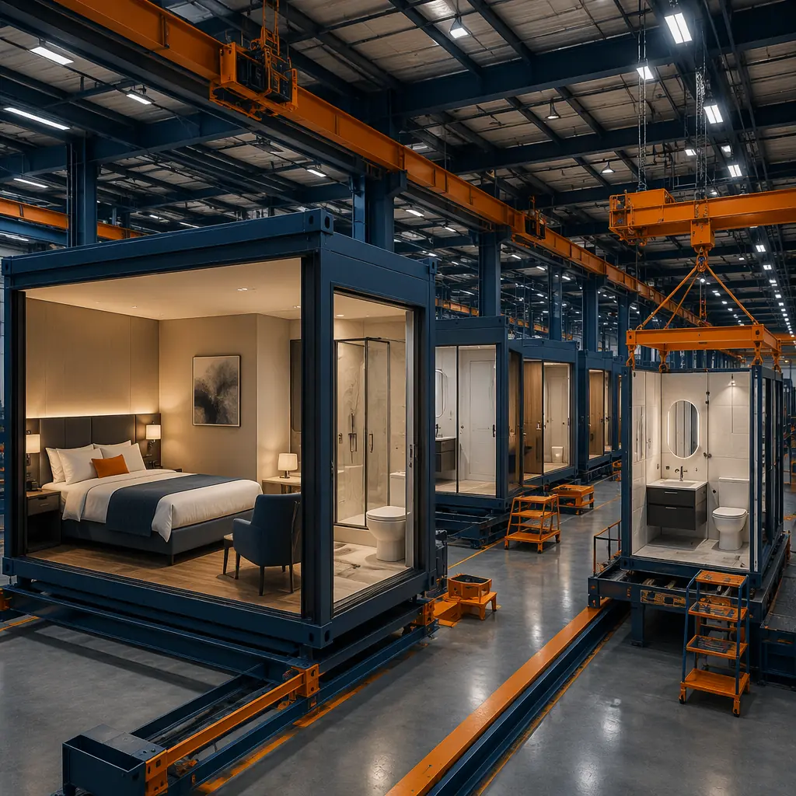
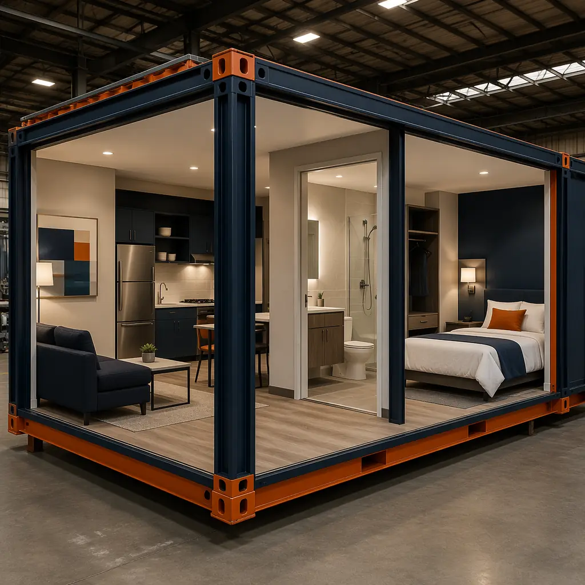
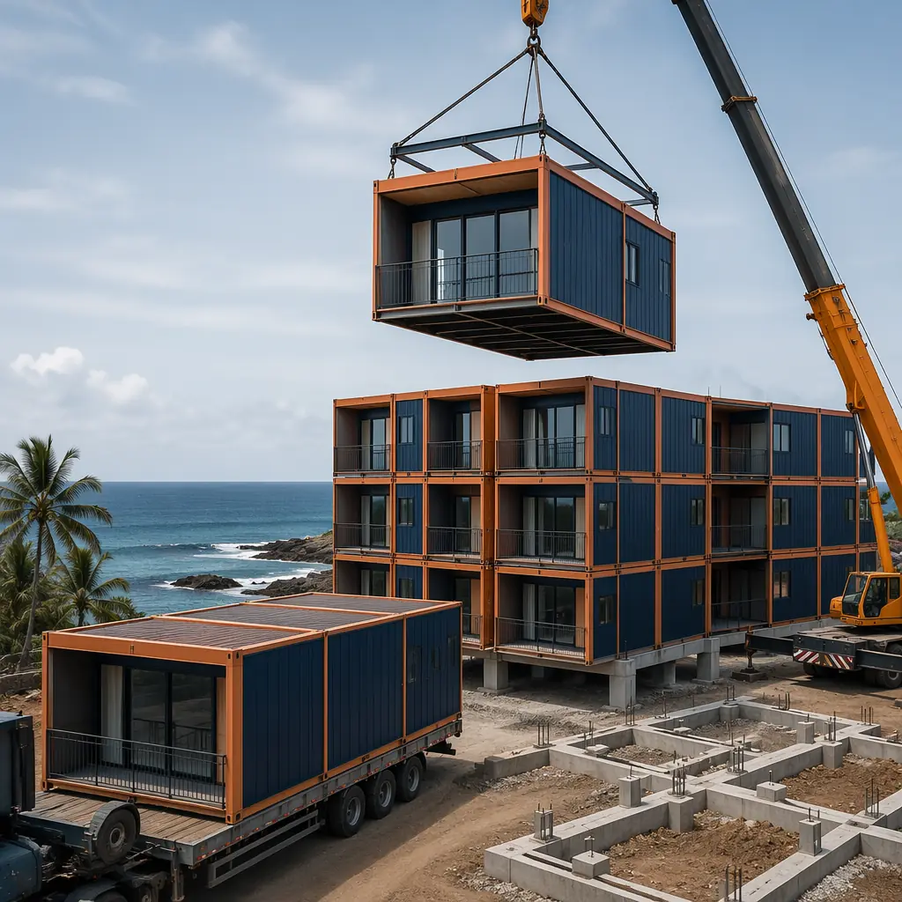

The global extended-stay hotel market is projected to reach $67 billion by 2030, growing at 9.2% CAGR as business travel shifts toward longer-duration assignments and digital nomads drive demand for serviced apartment living. Simultaneously, resort development is accelerating in secondary and tertiary destinations as travelers seek experiences beyond saturated urban markets. Both segments share a common challenge: remote or constrained construction sites, aggressive opening timelines tied to seasonal demand peaks, and hotel brand standards that were written for traditional construction methods. Modular prefabricated construction addresses all three, delivering resort and extended-stay properties 30–50% faster while achieving the brand-standard consistency that operators require across multi-property portfolios.

Why Resorts and Extended-Stay Are the Strongest Modular Use Cases in Hospitality
Standard limited-service hotels were the first hospitality segment to adopt modular construction, and the logic is well-established: repeating room layouts align perfectly with factory production, and the speed advantage means earlier revenue generation. But resorts and extended-stay properties amplify this advantage through three additional factors that make them structurally better suited to modular delivery than standard hotels:
- Remote site economics: Resorts are built where the destination is, not where the construction labor is. Transporting a completed module on a flatbed truck is logistically simpler and more predictable than mobilizing 200+ construction workers to a remote coastal or mountain site for 18 months. Our analysis of workforce logistics for remote housing projects confirms that site labor availability is the binding constraint on remote construction schedules — a constraint that modular construction removes by shifting 80% of labor hours to a factory.
- Phased opening economics: Extended-stay properties and large resorts rarely open all at once. A 300-unit resort typically opens in 2-3 phases to manage pre-opening staffing, build market awareness, and conserve working capital during ramp-up. Modular construction enables true phased delivery: the first 100 modules are produced and installed while the next 100 are still on the factory line. Phase 1 generates revenue while Phase 2 is being assembled — a financial model that our standard hotel construction analysis has validated across 500+ projects.
- Brand standard compliance at scale: Hotel brand standards — Marriott, Hilton, IHG, Accor — specify everything from bathroom tile patterns to HVAC sound levels. Achieving consistent compliance across a 300-room resort built by a traditional general contractor requires intensive quality control that strains even experienced project teams. Modular factory production achieves this consistency by design: every bathroom is assembled on the same jigs, every HVAC unit is installed to the same sequence, every room is inspected to the same checklist. Brand standard deviations drop from 8-12% of rooms requiring punch-list correction in traditional construction to under 2% in modular. This consistency is particularly valuable for extended-stay properties, where guests spend 5-30 nights in the same room and imperfections that a transient guest overlooks become irritants that damage review scores.
Resort Design: Breaking the "Box" Constraint
The most persistent objection to modular resort construction is aesthetics: "modular means boxes, and resorts need character." This objection conflates structural system with architectural expression. MODURA's steel-frame modular system provides the structural chassis; the architectural envelope — facade materials, roof forms, balconies, and exterior finishes — is independent of the module structure and can achieve any architectural style the design team specifies.
Consider a 200-unit beach resort with three distinct building typologies: oceanfront suites (premium, 60 units), garden villas (mid-tier, 80 units), and standard rooms (entry-level, 60 units). In traditional construction, three different building designs mean three different construction approaches, three sets of subcontractor coordination, and three learning curves. In modular construction, the underlying module chassis is identical across all three typologies — same structural steel frame, same MEP rough-in layout, same factory assembly sequence. The differentiation happens in finishes, not structure: oceanfront suites get larger windows (module frame pre-sized at factory), garden villas get exterior trellises (attachment points built into module steel), standard rooms get optimized for cost efficiency. This shared-chassis approach is the same engineering principle that our design flexibility analysis documents across multiple building types.

Key Resort Design Considerations
| Design Element | Traditional Approach | Modular Approach |
|---|---|---|
| Room module dimensions | Variable per room type, complex framing | 3.6m × 8-12m standard module, combinable for suites |
| Facade expression | Site-applied, weather-dependent | Module carries structural facade attachments; finish applied on site or factory |
| Balconies & terraces | Cantilevered from structure, complex waterproofing | Pre-attached to module or bolted on site; factory-sealed waterproofing |
| Public spaces (lobby, restaurant) | Fully site-built | Hybrid: modular structure with site-applied premium finishes |
| MEP infrastructure | Site-assembled from components | Pre-installed in module, connected at corridor and riser joints |
Extended-Stay: The Operational Case for Modular
Extended-stay hotels — Residence Inn, Homewood Suites, Staybridge Suites, and their regional equivalents — operate on a fundamentally different economic model than transient hotels. Where a limited-service hotel generates revenue from 1-3 night stays with high turnover and correspondingly high housekeeping costs, an extended-stay property targets 5-30 night stays with lower turnover, lower operating costs per occupied room, and higher guest satisfaction sensitivity. A guest who spends 14 nights in a room notices things that a one-night guest never would: the HVAC that cycles too loudly, the dishwasher that's slightly misaligned, the bathroom fan that hums at an irritating frequency.
Modular construction addresses extended-stay quality requirements through factory-controlled assembly. Every room's HVAC system is tested to specified sound levels (typically NC-30 or below for extended-stay brands) before the module leaves the factory. Every plumbing fixture is pressure-tested. Every electrical circuit is continuity-tested. A traditional hotel might discover 5-8% of rooms have quality issues during pre-opening punch lists; a modular extended-stay property typically has under 2%, and those issues are identified and resolved in the factory rather than on site where remediation disrupts the opening schedule.
The financial implications extend beyond construction. Extended-stay properties typically achieve gross operating profit (GOP) margins of 55-65%, compared to 40-50% for full-service hotels, because the lower turnover reduces housekeeping, front desk, and laundry costs. But these margins are sensitive to maintenance costs: a room with construction defects that require premature HVAC replacement or plumbing repairs can erode 3-5 margin points over a 5-year ownership period. Modular construction's quality advantage — specifically, the elimination of field-assembled MEP systems in favor of factory-tested, factory-commissioned systems — directly supports the extended-stay operating model. We've documented this quality-to-operating-cost relationship across multifamily developments where long-term maintenance costs are a key investor metric.

Phased Opening Strategies: Revenue Before Completion
The phased opening capability of modular construction is particularly powerful for resorts and extended-stay properties, where the relationship between capital deployment and revenue generation is critical to project returns. A traditional 200-room resort requires approximately 85-90% completion before the first guest can check in: the lobby, at least one restaurant, the pool deck, back-of-house areas, and a critical mass of guest rooms must all be operational simultaneously. The developer has deployed 85% of construction capital before any revenue is generated — a financing burden that adds 12-18 months of interest carry to the project budget.
Modular phased delivery changes this equation. Consider a phased strategy for the same 200-room resort:
- Phase 1 (months 9-10): 80 guest rooms, lobby shell (modules), one restaurant (hybrid modular structure with site finishes), pool deck, back-of-house. Soft opening at month 10, generating revenue from 40% of room inventory.
- Phase 2 (months 12-14): Additional 70 guest rooms, spa building (modular), second restaurant. Total inventory: 150 rooms (75%).
- Phase 3 (months 16-18): Final 50 guest rooms, conference facilities, landscaping completion. Grand opening at month 18.
The developer has generated 8 months of revenue from Phase 1 rooms before Phase 3 rooms even open, significantly reducing the project's weighted average cost of capital. At an ADR of $250 and 65% occupancy, 80 rooms opening 8 months early generates approximately $3.1 million in incremental revenue — revenue that offsets construction financing costs and improves project IRR by 200-400 basis points. This phased approach is structurally impossible with traditional construction, where site mobilization and sequential trade dependencies prevent partial opening.
Developer insight: "The phased opening strategy that modular enables is the single most underappreciated financial benefit of prefabricated construction. We opened our first resort tower 7 months before the second was complete, and the revenue from those early months effectively paid for our FF&E package. Traditional construction simply can't do that." — From a MODURA hospitality client, 200-unit beach resort, Southeast Asia.
Coastal and Climate Challenges: Why Modular Excels in Difficult Environments
Resorts tend to be built in beautiful but challenging locations: coastal zones with salt spray and hurricane exposure, mountain sites with short construction seasons, tropical locations with monsoon seasons that halt traditional construction for 2-4 months per year. These environmental constraints are a major advantage for modular construction because the building is fabricated in a weather-protected factory. The only weather-dependent activities are foundation work and module placement — together representing 15-20% of total project labor hours, compared to 100% for traditional construction.
Consider a resort on a Caribbean island with a 6-month dry season (December-May) and a 6-month wet season (June-November). Traditional construction must complete all structural work, enclosure, and roofing during the dry season — a 6-month window that determines the project's critical path. Any delay in foundation work, any late material delivery, and the project loses an entire year. Modular construction runs factory production year-round, stockpiling completed modules during the wet season and installing them during the dry season. The critical path shrinks from 6 months of weather-dependent site work to 3 months of foundation and a 2-month module installation window — a 65% reduction in weather exposure.
This resilience to environmental constraints is equally valuable for extended-stay properties in urban locations where construction noise, traffic disruption, and site access hours are restricted. A 150-unit extended-stay hotel on a tight urban site might be limited to 8 hours of construction activity per day, 5 days per week, with noise restrictions that prevent pile driving and concrete pouring during evening hours. Factory production eliminates these constraints entirely, and site assembly — primarily crane lifts and bolted connections — generates far less noise and disruption than traditional construction. This urban construction advantage mirrors the benefits we've documented in municipal building projects where construction disruption is a key community concern.

Brand Standards and FF&E Integration
Hotel brand standards specify hundreds of individual requirements — from the exact model of bathroom faucet to the minimum clearance around the bed to the acceptable sound transmission class (STC) rating between adjacent rooms. Traditional construction delegates compliance verification to the general contractor, who delegates it to subcontractors, who interpret standards through their own installation practices. The result is variation: two adjacent rooms in a traditionally-built hotel may have different HVAC sound levels, different water pressure at the shower, and different closet dimensions — all within brand tolerance but annoying to guests who switch rooms mid-stay.
Modular factory production eliminates this variation at its source. Brand-standard fixtures and finishes are specified once in the BIM model and replicated exactly across every module. FF&E (furniture, fixtures, and equipment) can be installed in the factory rather than on site, reducing post-construction FF&E installation from 4-6 weeks of site activity to a factory-integrated process that runs in parallel with module production. For extended-stay properties, where the in-room kitchenette and laundry equipment represent a significant FF&E investment, factory installation ensures every appliance is leveled, connected, and tested before the module ships — eliminating the post-installation adjustment calls that plague traditionally-built properties during their first 90 days of operation.
This brand-standard compliance at scale has attracted major hotel flags to modular construction. As we've seen in our partner evaluation guide, developers evaluating modular manufacturers should verify brand-standard experience: how many projects under which flags, what was the punch-list rate, and what were guest satisfaction scores in the first year of operation. MODURA's hospitality portfolio spans multiple international brands across 18 countries with a consistent track record of on-time, on-brand delivery.
Is Modular Right for Your Resort or Extended-Stay Project?
Modular construction delivers the strongest advantage for resort and extended-stay projects with these characteristics:
- Remote or constrained sites: Coastal, mountain, island, or dense urban locations where construction labor is scarce, expensive, or seasonally limited
- Multi-phase development: Projects planning 2+ phases where early revenue generation improves project returns and de-risks later phases
- Brand-standard compliance: Flagged properties where consistency across 100+ identical or near-identical rooms is a key operator requirement
- Extended-stay operating model: Properties where guest satisfaction is tied to room quality consistency and maintenance costs directly impact GOP margins
- Portfolio scale: Developers planning 3+ similar properties where the factory learning curve and standardized design approach compound across the program
For developers new to modular hospitality, the best starting point is a comparative analysis: modular feasibility study for your specific site, program, and brand requirements, benchmarked against traditional construction for cost, schedule, and quality. MODURA's hospitality team has delivered modular hotel and resort projects across 18 countries, from limited-service roadside properties to 300-room destination resorts. If you're planning a resort or extended-stay development — or evaluating modular as a delivery method for an upcoming hospitality project — contact our commercial team for a free feasibility assessment including site logistics analysis, phased opening scenarios, and a detailed cost and schedule comparison against traditional construction.